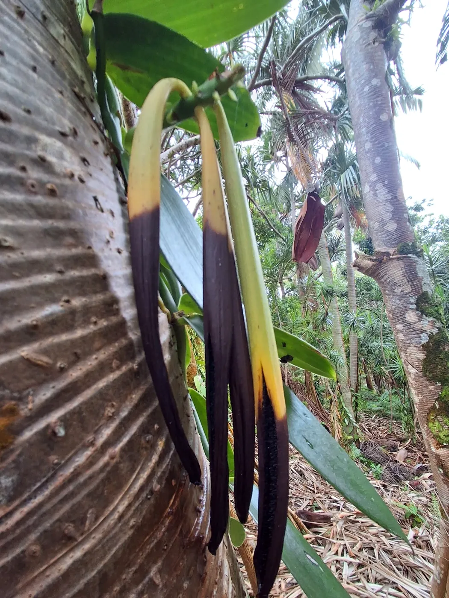
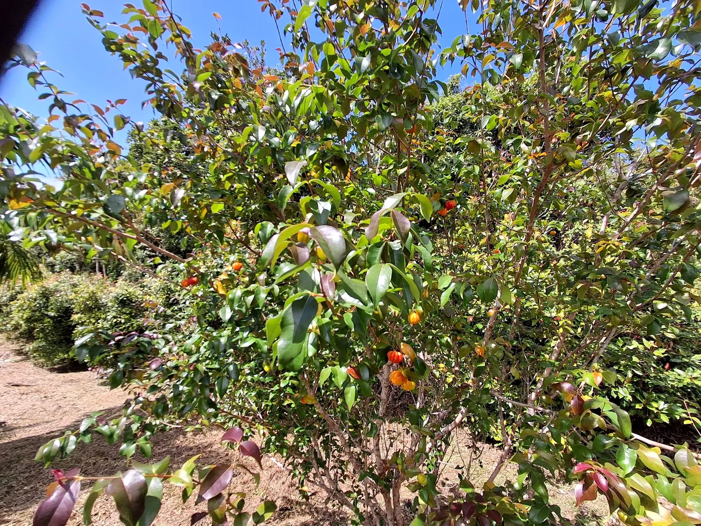
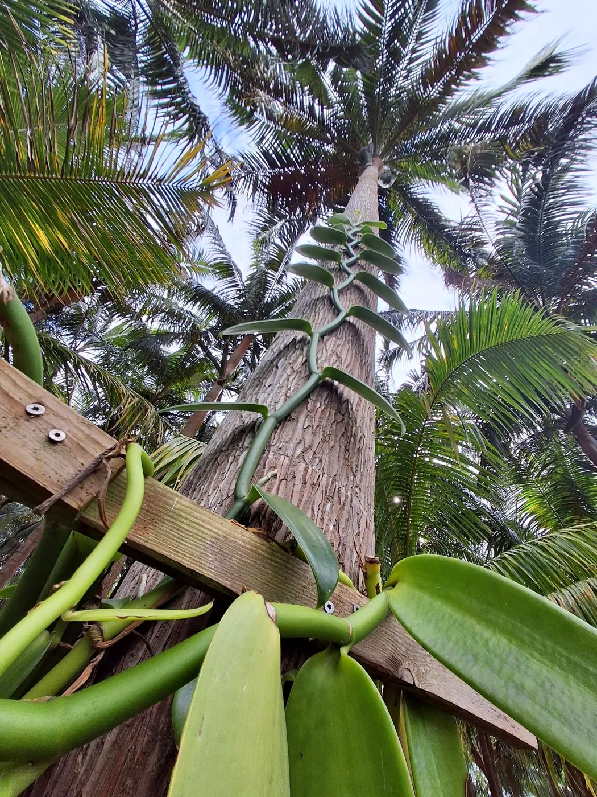
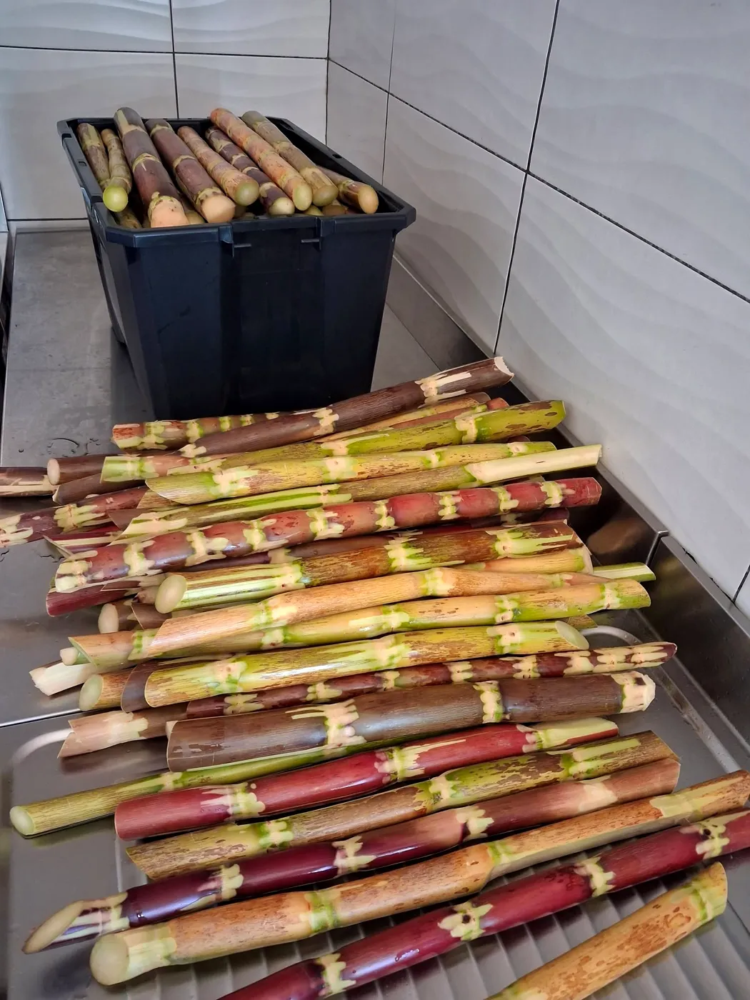
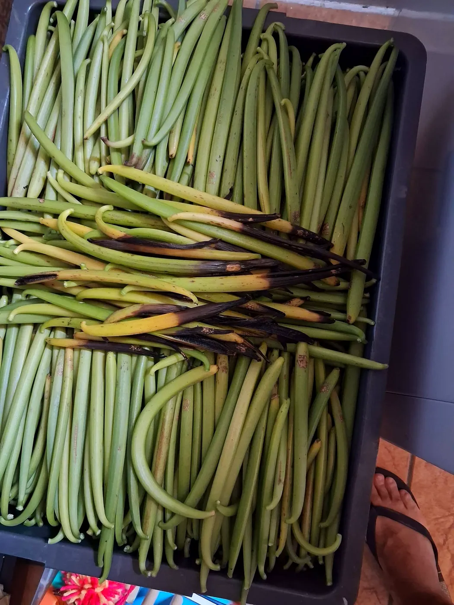
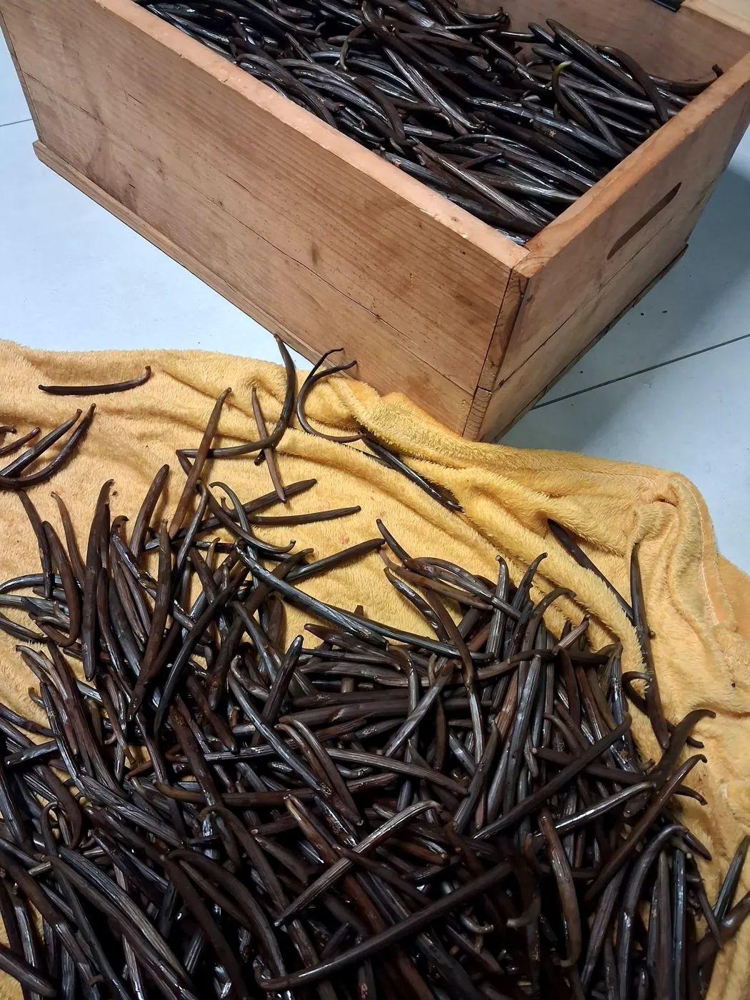
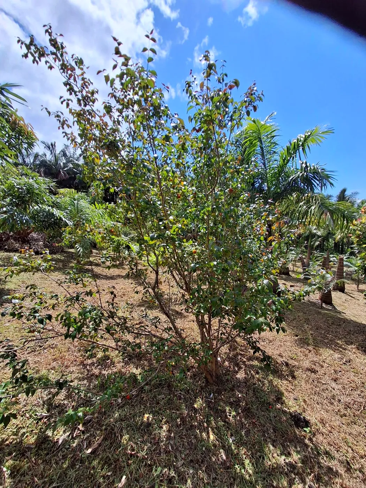
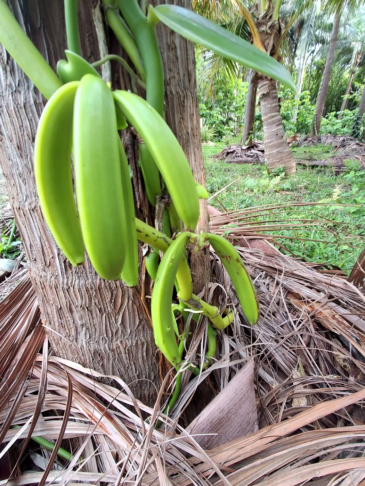
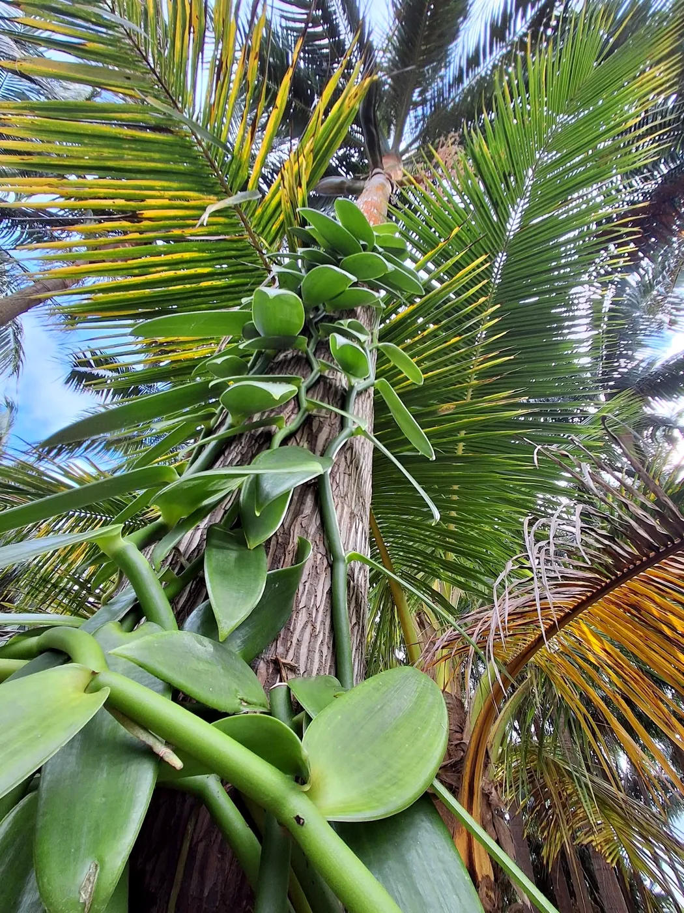

01
Sur la liane
Les gousses grandissent au soleil du Sud.

Agriculture sud sauvage · Saint-Philippe
Une exploitation agricole familiale au cœur du Sud sauvage, où la vanille pousse, mûrit et se prépare avec patience.
La famille, la terre, la vanille
Ici, à Takamaka, on cultive la vanille en famille. Les lianes grimpent sur leurs tuteurs, les gousses se forment, puis vient le temps de la récolte et de la préparation, jusqu'à la gousse noire et parfumée que l'on retrouve à l'épicerie.


De la fleur à la gousse
Plusieurs mois de soin entre la liane et la gousse prête à parfumer vos desserts.

Les gousses grandissent au soleil du Sud.

« La récolte bat son plein… », comme vous l'annonciez cet été.

Les gousses brunissent et développent tout leur parfum.

Sur rendez-vous
Venez découvrir les lianes, les gousses et le savoir-faire de la famille, puis repartez avec votre vanille.
Au fil des saisons


Nous trouver
Pour une visite, une commande de vanille ou un renseignement, un appel ou un message suffit.